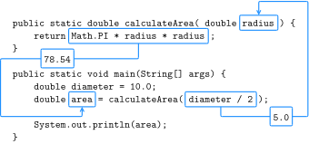

4 Methods and Testing
So far, we’ve written programs that have only one method, named main. In this chapter, we’ll show you how to organize programs into multiple methods. We’ll also take a look at the Math class, which provides methods for common mathematical operations. Finally, we’ll discuss strategies for incrementally developing and testing your code.
4.1 Defining New Methods
Some methods perform a computation and return a result. For example, nextDouble reads input from the keyboard and returns it as a double. Other methods, like println, carry out a sequence of actions without returning a result. Java uses the keyword void to define such methods:
public static void newLine() {
System.out.println();
}
public static void main(String[] args) {
System.out.println("First line.");
newLine();
System.out.println("Second line.");
}In this example, the newLine and main methods are both public, which means they can be invoked (or “called”) from other classes. And they are both void, which means that they don’t return a result (in contrast to nextDouble). The output of the program is shown here:
First line.
Second line.Notice the extra space between the lines. If we wanted more space between them, we could invoke the same method repeatedly. Or we could write yet another method (named threeLine) that displays three blank lines:
public class NewLine {
public static void newLine() {
System.out.println();
}
public static void threeLine() {
newLine();
newLine();
newLine();
}
public static void main(String[] args) {
System.out.println("First line.");
threeLine();
System.out.println("Second line.");
}
}In this example, the name of the class is NewLine. By convention, class names begin with a capital letter. NewLine contains three methods, newLine, threeLine, and main. Remember that Java is case-sensitive, so NewLine and newLine are not the same.
By convention, method names begin with a lowercase letter and use “camel case”, which is a cute name for jammingWordsTogetherLikeThis. You can use any name you want for methods, except main or any of the Java keywords.
4.2 Flow of Execution
When you look at a class definition that contains several methods, it is tempting to read it from top to bottom. But that is not the flow of execution, or the order the program actually runs. The NewLine program runs methods in the opposite order than they are listed.
Programs always begin at the first statement of main, regardless of where it is in the source file. Statements are executed one at a time, in order, until you reach a method invocation, which you can think of as a detour. Instead of going to the next statement, you jump to the first line of the invoked method, execute all the statements there, and then come back and pick up exactly where you left off.
That sounds simple enough, but remember that one method can invoke another one. In the middle of main, the previous example goes off to execute the statements in threeLine. While in threeLine, it goes off to execute newLine. Then newLine invokes println, which causes yet another detour.
Fortunately, Java is good at keeping track of which methods are running. So when println completes, it picks up where it left off in newLine; when newLine completes, it goes back to threeLine; and when threeLine completes, it gets back to main.
Beginners often wonder why it’s worth the trouble to write other methods, when they could just do everything in main. The NewLine example demonstrates a few reasons:
Creating a new method allows you to name a block of statements, which makes the code easier to read and understand.
Introducing new methods can make the program shorter by eliminating repetitive code. For example, to display nine consecutive newlines, you could invoke
threeLinethree times.A common problem-solving technique is to break problems down into subproblems. Methods allow you to focus on each subproblem in isolation, and then compose them into a complete solution.
Perhaps most importantly, organizing your code into multiple methods allows you to test individual parts of your program separately. It’s easier to get a complex program working if you know that each method works correctly.
4.3 Parameters and Arguments
Some of the methods we have used require arguments, which are the values you provide in parentheses when you invoke the method.
For example, the println method takes a String argument. To display a message, you have to provide the message: System.out.println("Hello"). Similarly, the printf method can take multiple arguments. The statement System.out.printf("\%d in = \%f cm\\n", inch, cm) has three arguments: the format string, the inch value, and the cm value.
When you invoke a method, you provide the arguments. When you define a method, you name the parameters, which are variables that indicate what arguments are required. The following class shows an example:
public class PrintTwice {
public static void printTwice(String s) {
System.out.println(s);
System.out.println(s);
}
public static void main(String[] args) {
printTwice("Don't make me say this twice!");
}
}The printTwice method has a parameter named s with type String. When you invoke printTwice, you have to provide an argument with type String.
Before the method executes, the argument gets assigned to the parameter. In the printTwice example, the argument "Don't make me say this twice!" gets assigned to the parameter s.
This process is called parameter passing, because the value gets passed from outside the method to the inside. An argument can be any kind of expression, so if you have a String variable, you can use its value as an argument:
String message = "Never say never.";
printTwice(message);The value you provide as an argument must have the same (or compatible) type as the parameter. For example, if you try this:
printTwice(17); // syntax errorYou will get an error message like this:
File: Test.java [line: 10]
Error: method printTwice in class Test cannot be applied
to given types;
required: java.lang.String
found: int
reason: actual argument int cannot be converted to
java.lang.String by method invocation conversionThis error message says that it found an int argument, but the required parameter should be a String. In the case of printTwice, Java won’t convert the integer 17 to the string "17" automatically.
Sometimes Java can convert an argument from one type to another automatically. For example, Math.sqrt requires a double, but if you invoke Math.sqrt(25), the integer value 25 is automatically converted to the floating-point value 25.0.
Parameters and other variables exist only inside their own methods. In the printTwice example, there is no such thing as s in the main method. If you try to use it there, you’ll get a compiler error.
Similarly, inside printTwice there is no such thing as message. That variable belongs to main. Because variables exist only inside the methods where they are defined, they are often called local variables.
4.4 Multiple Parameters
Here is an example of a method that takes two parameters:
public static void printTime(int hour, int minute) {
System.out.print(hour);
System.out.print(":");
System.out.println(minute);
}To invoke this method, we have to provide two integers as arguments:
int hour = 11;
int minute = 59;
printTime(hour, minute);Beginners sometimes make the mistake of declaring the arguments:
int hour = 11;
int minute = 59;
printTime(int hour, int minute); // syntax errorThat’s a syntax error, because the compiler sees int hour and int minute as variable declarations, not expressions that represent values. You wouldn’t declare the types of the arguments if they were simply integers:
printTime(int 11, int 59); // syntax errorPulling together the code fragments, here is the complete program:
public class PrintTime {
public static void printTime(int hour, int minute) {
System.out.print(hour);
System.out.print(":");
System.out.println(minute);
}
public static void main(String[] args) {
int hour = 11;
int minute = 59;
printTime(hour, minute);
}
}printTime has two parameters, named hour and minute. And main has two variables, also named hour and minute. Although they have the same names, these variables are not the same. The hour in printTime and the hour in main refer to different memory locations, and they can have different values.
For example, you could invoke printTime like this:
int hour = 11;
int minute = 59;
printTime(hour + 1, 0);Before the method is invoked, Java evaluates the arguments; in this example, the results are 12 and 0. Then it assigns those values to the parameters. Inside printTime, the value of hour is 12, not 11, and the value of minute is 0, not 59. Furthermore, if printTime modifies one of its parameters, that change has no effect on the variables in main.
4.5 Stack Diagrams
One way to keep track of variables is to draw a stack diagram, which is a memory diagram (see Section 2.3) that shows currently running methods. For each method there is a box, called a frame, that contains the method’s parameters and local variables. The name of the method appears outside the frame; the variables and parameters appear inside.
As with memory diagrams, stack diagrams show variables and methods at a particular point in time. Figure 4.1 is a stack diagram at the beginning of the printTime method. Notice that main is on top, because it executed first.
printTime(hour + 1, 0).
Stack diagrams help you to visualize the scope of a variable, which is the area of a program where a variable can be used.
Stack diagrams are a good mental model for how variables and methods work at run-time. Learning to trace the execution of a program on paper (or on a whiteboard) is a useful skill for communicating with other programmers.
Educational tools can automatically draw stack diagrams for you. For example, Java Tutor (https://thinkjava.org/javatutor) allows you to step through an entire program, both forward and backward, and see the stack frames and variables at each step. If you haven’t already, you should check out the Java examples on that website.
4.6 Math Methods
You don’t always have to write new methods to get work done. As a reminder, the Java library contains thousands of classes you can use. For example, the Math class provides common mathematical operations:
double root = Math.sqrt(17.0);
double angle = 1.5;
double height = Math.sin(angle);The first line sets root to the square root of 17. The third line finds the sine of 1.5 (the value of angle). Math is in the java.lang package, so you don’t have to import it.
Values for the trigonometric functions—sin, cos, and tan—must be in radians. To convert from degrees to radians, you divide by 180 and multiply by \(\pi\). Conveniently, the Math class provides a constant named PI that contains an approximation of \(\pi\):
double degrees = 90;
double angle = degrees / 180.0 * Math.PI;Notice that PI is in capital letters. Java does not recognize Pi, pi, or pie. Also, PI is the name of a constant, not a method, so it doesn’t have parentheses. The same is true for the constant Math.E, which approximates Euler’s number.
Converting to and from radians is a common operation, so the Math class provides methods that do that for you:
double radians = Math.toRadians(180.0);
double degrees = Math.toDegrees(Math.PI);Another useful method is round, which rounds a floating-point value to the nearest integer and returns a long. The following result is 63 (rounded up from 62.8319):
long x = Math.round(Math.PI * 20.0);A long is like an int, but bigger. More specifically, an int uses 32 bits of memory; the largest value it can hold is \(2^{31}-1\), which is about 2 billion. A long uses 64 bits, so the largest value is \(2^{63}-1\), which is about 9 quintillion.
Take a minute to read the documentation for these and other methods in the Math class. The easiest way to find documentation for Java classes is to do a web search for “Java” and the name of the class.
4.7 Composition
You have probably learned how to evaluate simple expressions like \(\sin(\pi/2)\) and \(\log(1/x)\). First, you evaluate the expression in parentheses, which is the argument of the function. Then you can evaluate the function itself, either by hand or by punching it into a calculator.
This process can be applied repeatedly to evaluate more-complex expressions like \(\log(1/\sin(\pi/2))\). First we evaluate the argument of the innermost function (\(\pi/2 = 1.57\)), then evaluate the function itself (\(\sin(1.57) = 1.0\)), and so on.
Just as with mathematical functions, Java methods can be composed to solve complex problems. That means you can use one method as part of another. In fact, you can use any expression as an argument to a method, as long as the resulting value has the correct type:
double x = Math.cos(angle + Math.PI / 2.0);This statement divides Math.PI by 2.0, adds the result to angle, and computes the cosine of the sum. You can also take the result of one method and pass it as an argument to another:
double x = Math.exp(Math.log(10.0));In Java, the log method always uses base \(e\). So this statement finds the log base \(e\) of 10, and then raises \(e\) to that power. The result gets assigned to x.
Some math methods take more than one argument. For example, Math.pow takes two arguments and raises the first to the power of the second. This line computes \(2^{10}\) and assigns the value 1024.0 to the variable x:
double x = Math.pow(2.0, 10.0);When using Math methods, beginners often forget the word Math. For example, if you just write x = pow(2.0, 10.0), you will get a compiler error:
File: Test.java [line: 5]
Error: cannot find symbol
symbol: method pow(double,double)
location: class TestThe message “cannot find symbol” is confusing, but the last two lines provide a useful hint. The compiler is looking for a method named pow in the file Test.java (the file for this example). If you don’t specify a class name when referring to a method, the compiler looks in the current class by default.
4.8 Return Values
When you invoke a void method, the invocation is usually on a line all by itself. For example:
printTime(hour + 1, 0);On the other hand, when you invoke a value-returning method, you have to do something with the return value. We usually assign it to a variable or use it as part of an expression, like this:
double error = Math.abs(expect - actual);
double height = radius * Math.sin(angle);Compared to void methods, value-returning methods differ in two ways:
They declare the type of the return value (the return type).
They use at least one
returnstatement to provide a return value.
Here’s an example from a program named Circle.java. The calculateArea method takes a double as a parameter and returns the area of a circle with that radius (i.e., \(\pi r^2\)):
public static double calculateArea(double radius) {
double result = Math.PI * radius * radius;
return result;
}As usual, this method is public and static. But in the place where we are used to seeing void, we see double, which means that the return value from this method is a double.
The last line is a new form of the return statement that means, “Return immediately from this method, and use the following expression as the return value.” The expression you provide can be arbitrarily complex, so we could have written this method more concisely:
public static double calculateArea(double radius) {
return Math.PI * radius * radius;
}On the other hand, temporary variables like result often make debugging easier, especially when you are stepping through code by using an interactive debugger (see Appendix 18.6).
Figure 4.2 illustrates how data values flows through the program. When the main method invokes calculateArea, the value 5.0 is assigned to the parameter radius. calculateArea then returns the value 78.54, which is assigned to the variable area.

The type of the expression in the return statement must match the return type of the method itself. When you declare that the return type is double, you are making a promise that this method will eventually produce a double value. If you try to return with no expression, or return an expression with the wrong type, the compiler will give an error.
4.9 Incremental Development
People often make the mistake of writing a lot of code before they try to compile and run it. Then they spend way too much time debugging. A better approach is incremental development. Its key aspects are as follows:
Start with a working program and make small, incremental changes. At any point, if there is an error, you will know where to look.
Use variables to hold intermediate values so you can check them, either with print statements or by using a debugger.
Once the program is working, you can consolidate multiple statements into compound expressions (but only if it does not make the program more difficult to read).
As an example, suppose you want to find the distance between two points, given by the coordinates \((x_1, y_1)\) and \((x_2, y_2)\). By the usual definition:
\[distance = \sqrt{(x_2 - x_1)^2 +(y_2 - y_1)^2}\]
The first step is to consider what a distance method should look like in Java. In other words, what are the inputs (parameters) and what is the output (return value)? For this method, the parameters are the two points, and it is natural to represent them using four double values. The return value is the distance, which should also have type double.
Already we can write an outline for the method, which is sometimes called a stub. The stub includes the method declaration and a return statement:
public static double distance
(double x1, double y1, double x2, double y2) {
return 0.0; // stub
}The return statement is a placeholder that is necessary only for the program to compile. At this stage, the program doesn’t do anything useful, but it is good to compile it so we can find any syntax errors before we add more code.
It’s usually a good idea to think about testing before you develop new methods; doing so can help you figure out how to implement them. To test the method, we can invoke it from main by using the sample values:
double dist = distance(1.0, 2.0, 4.0, 6.0);With these values, the horizontal distance is 3.0 and the vertical distance is 4.0. So the result should be 5.0, the hypotenuse of a 3-4-5 triangle. When you are testing a method, it is necessary to know the right answer.
Once we have compiled the stub, we can start adding code one line at a time. After each incremental change, we recompile and run the program. If there is an error, we have a good idea of where to look: the lines we just added.
The next step is to find the differences, \(x_2 - x_1\) and \(y_2 - y_1\). We store those values in temporary variables named dx and dy, so that we can examine them with print statements before proceeding. They should be 3.0 and 4.0:
public static double distance
(double x1, double y1, double x2, double y2) {
double dx = x2 - x1;
double dy = y2 - y1;
System.out.println("dx is " + dx);
System.out.println("dy is " + dy);
return 0.0; // stub
}We will remove the print statements when the method is finished. Code like that is called scaffolding, because it is helpful for building the program but is not part of the final product.
The next step is to square dx and dy. We could use the Math.pow method, but it is simpler (and more efficient) to multiply each term by itself. Then we add the squares and print the result so far:
public static double distance
(double x1, double y1, double x2, double y2) {
double dx = x2 - x1;
double dy = y2 - y1;
double dsquared = dx * dx + dy * dy;
System.out.println("dsquared is " + dsquared);
return 0.0; // stub
}Again, you should compile and run the program at this stage and check the intermediate value, which should be 25.0. Finally, we can use Math.sqrt to compute and return the result:
public static double distance
(double x1, double y1, double x2, double y2) {
double dx = x2 - x1;
double dy = y2 - y1;
double dsquared = dx * dx + dy * dy;
double result = Math.sqrt(dsquared);
return result;
}As you gain more experience programming, you might write and debug more than one line at a time. But if you find yourself spending a lot of time debugging, consider taking smaller steps.
4.10 Vocabulary
- void:
-
A special return type indicating the method does not return a value.
- invoke:
-
To cause a method to execute. Also known as “calling” a method.
- flow of execution:
-
The order in which Java executes methods and statements. It may not necessarily be from top to bottom in the source file.
- argument:
-
A value that you provide when you call a method. This value must have the type that the method expects.
- parameter:
-
A piece of information that a method requires before it can run. Parameters are variables: they contain values and have types.
- parameter passing:
-
The process of assigning an argument value to a parameter variable.
- local variable:
-
A variable declared inside a method. Local variables cannot be accessed from outside their method.
- stack diagram:
-
A graphical representation of the variables belonging to each method. The method calls are “stacked” from top to bottom, in the flow of execution.
- frame:
-
In a stack diagram, a representation of the variables and parameters for a method, along with their current values.
- scope:
-
The area of a program where a variable can be used.
- composition:
-
The ability to combine simple expressions and statements into compound expressions and statements.
- return type:
-
The type of value a method returns.
- return value:
-
The value provided as the result of a method invocation.
- temporary variable:
-
A short-lived variable, often used for debugging.
- incremental development:
-
A process for creating programs by writing a few lines at a time, compiling, and testing.
- stub:
-
A placeholder for an incomplete method so that the class will compile.
- scaffolding:
-
Code that is used during program development but is not part of the final version.
4.11 Exercises
The code for this chapter is in the ch04 directory of ThinkJavaCode2. See page for instructions on how to download the repository. Before you start the exercises, we recommend that you compile and run the examples.
If you have not already read Appendix 18.4, now might be a good time. It describes an efficient way to test programs that take input from the user and display specific output.
Exercise 4.1. The purpose of this exercise is to take code from a previous exercise and redesign it as a method that takes parameters. Start with a working solution to Exercise 2.2.
Write a method called
printAmericanthat takes the day, date, month, and year as parameters and displays them in American format.Test your method by invoking it from
mainand passing appropriate arguments. The output should look something like this (except the date might be different):Monday, July 22, 2019Once you have debugged
printAmerican, write another method calledprintEuropeanthat displays the date in European format.
Exercise 4.2. This exercise reviews the flow of execution through a program with multiple methods. Read the following code and answer the questions:
public static void main(String[] args) {
zippo("rattle", 13);
}public static void baffle(String blimp) {
System.out.println(blimp);
zippo("ping", -5);
}public static void zippo(String quince, int flag) {
if (flag < 0) {
System.out.println(quince + " zoop");
} else {
System.out.println("ik");
baffle(quince);
System.out.println("boo-wa-ha-ha");
}
}Write the number 1 next to the first line of code in this program that will execute.
Write the number 2 next to the second line of code, and so on until the end of the program. If a line is executed more than once, it might end up with more than one number next to it.
What is the value of the parameter
blimpwhenbafflegets invoked?What is the output of this program?
Exercise 4.3. Answer the following questions without running the program on a computer.
Draw a stack diagram that shows the state of the program the first time
pingis invoked.What is output by the following program? Be precise about the placement of spaces and newlines.
public static void zoop() {
baffle();
System.out.print("You wugga ");
baffle();
}public static void main(String[] args) {
System.out.print("No, I ");
zoop();
System.out.print("I ");
baffle();
}public static void baffle() {
System.out.print("wug");
ping();
}public static void ping() {
System.out.println(".");
}Exercise 4.4. If you have a question about whether something is legal, and what happens if it is not, a good way to find out is to ask the compiler. Answer the following questions by trying them out.
What happens if you invoke a value method and don’t do anything with the result; that is, if you don’t assign it to a variable or use it as part of a larger expression?
What happens if you use a void method as part of an expression? For example, try
System.out.println("boo!") + 7;.
Exercise 4.5. Draw a stack diagram that shows the state of the program the second* time zoop is invoked. What is the complete output?*
public static void zoop(String fred, int bob) {
System.out.println(fred);
if (bob == 5) {
ping("not ");
} else {
System.out.println("!");
}
}public static void main(String[] args) {
int bizz = 5;
int buzz = 2;
zoop("just for", bizz);
clink(2 * buzz);
}public static void clink(int fork) {
System.out.print("It's ");
zoop("breakfast ", fork);
}public static void ping(String strangStrung) {
System.out.println("any " + strangStrung + "more ");
}Exercise 4.6. Many computations can be expressed more concisely using the “multadd” operation, which takes three operands and computes a * b + c. Some processors even provide a hardware implementation of this operation for floating-point numbers.
Create a new program called Multadd.java.
Write a method called
multaddthat takes threedoublesas parameters and returnsa * b + c.Write a
mainmethod that testsmultaddby invoking it with a few simple parameters, like1.0, 2.0, 3.0.Also in
main, usemultaddto compute the following values: \[\begin{aligned} & \sin \frac{\pi}{4} + \frac{\cos \frac{\pi}{4}}{2} & \\ & \log 10 + \log 20 & \end{aligned}\]Write a method called
expSumthat takes a double as a parameter and usesmultaddto calculate: \[\begin{aligned} x e^{-x} + \sqrt{1 - e^{-x}} \end{aligned}\] Hint:* The method for raising \(e\) to a power isMath.exp.*
In the last part of this exercise, you need to write a method that invokes another method you wrote. Whenever you do that, it is a good idea to test the first method carefully before working on the second. Otherwise, you might find yourself debugging two methods at the same time, which can be difficult.
One of the purposes of this exercise is to practice pattern-matching: the ability to recognize a specific problem as an instance of a general category of problems.